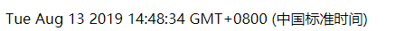

数据绑定是将视图和数据相关联，当数据发生变化时，可以自动更新视图，本文介绍vue,js中数据绑定的语法
（1）插值
文本插值是最基本的形式 使用双大括号{{}}，例如<span>数据：{{text}}</span>，当text的值改变时，文本中的值也会联动的发生变化。例如：
<div id="app">
{{book}}
</div>
<scrip>
var app=new Vue({
el:"#app"
data:{
book:'《天涯明月刀》'
}
})
</scrip>大括号里面的值被替换为《天涯明月刀》，通过任何方式修改book，大括号里面的值都会被实时替换，比如下面这个例子，实时显示当前的时间 每秒显示
<div id="Date">
{{datetime}}
</div>
<scrip>
var date = new Vue({
el: "#Date",
data: {
datetime:new Date()
},
mounted: function ()
{
var _this = this;//声明一个变量指向当前Vue实例
this.timer=setInterval(function(){
_this.datetime=new Date();//修改数据date
},1000)
},
beforeDestroy: function ()
{
if (this.timer)
{
setInterval(this.timer);//在Vue实例销毁前，清除我们的定时器
}
}
})
</scrip>
这里的{{datetime}}输出的是浏览器默认的时间格式，大家可以通过一些函数进行格式化转换，稍后会通过Vue的过滤器（filter）或计算属性（computed）也可以实现，以后我会介绍到
如果有时候就是想输出html，而不是将数据解释后的纯文本，可以使用v-html
<div id="html">
<span v-html="link"></span>
</div>
<script>
var html = new Vue({
el: "#html",
data: {
link:"<a href='#'>这是一个连接</a>"
}
})
</script>link的内容将会被渲染成一个基友点击功能的a标签，而不是纯文本。这里需要注意，如果将用户产生的内容使用v-html输出后，可能导致XSS攻击，所以要在服务端对用户提交的内容进行处理，一般可将'<>'尖括号转义。
如果想显示{{}}标签，而不进行替换，使用v-pre即可跳过这个元素和他子元素的编译过程，例如：<span v-pre＞{{这里的内容是不会被编译的门}}＜/span>
有时候只需渲染一次数据，后续数据变化不再关心，可以通过“*”实现 ，<span>数据：{{*text}}</span>，双大括号标签会把里面的值全部当做字符串来处理，如果是html片段，则可以使用三个大括号来绑定：<div>Logo:{{{logo}}}</div> logo:'<span>ddfe</span>'
双大括号标签还可以放进html标签中
<li data-id='{{id}}'></li>
注意 ：vue指令和自身特性内是不可以插值的，如果用错了地方，vue.js会发出警告
（2）表达式
可有js表达式和过滤器构成，过滤器可以没有，也可以有多个
{{cents/100}}//在原始值上除以100
{{true？1:0}}//三元表达式
{{example.split(",")}}//js 函数
（2）、过滤器：
Vue.js支持在{{}}插值的尾部添加一个“（|）”管道符对数据进行过滤，经常用于格式化文本，比如字母全部大写、货币千位使用逗号分隔等。过滤规则是自定义的，通过给Vue实例添加选项filters来设置，例如在之前实时显示当前时间的示例，可以对时间进行格式化处理
<div id="formatDate">
{{datetime|formatDate}}
</div>
<script>
var padDate = function (value) {
return value < 10 ? '' + value : value;
};
var formatDate = new Vue(
{
el: '#formatDate',
data: {
datetime: new Date()
},
filters: {
formatDate: function (value)//这里的value是需要过滤的数据
{
var date = new Date();
var year = date.getFullYear();
var month = padDate(date.getMonth() + 1);
var date1 = padDate(date.getDate());
var hours = padDate(date.getHours());
var minutes = padDate(date.getMinutes());
var Seconds = padDate(date.getSeconds());
return year + '-' + month + '-' + date1 + ' ' + hours + ':' + minutes + ':' + Seconds;
}
},
mounted: function () {
var _this = this;//声明一个变量指向当前Vue实例
this.timer = setInterval(function () {
_this.datetime = new Date();//修改数据date
}, 1000)
},
beforeDestroy: function () {
if (this.timer) {
setInterval(this.timer);//在Vue实例销毁前，清除我们的定时器
}
}
})
</script>过滤器也可以串联，也可以接受参数，例如：{{message|filterA|FilterB}}，{{message|filterA（'arg1','arg2'）},这里的arg1和arg2将分别传给过滤器第二个参数和第三个参数，因为第一个参数是数据本身。过滤器应当用于处理简单的文本转换，如果实现更为复杂的数据变换，应使用计算属性
（3）指令
带有v-前缀的特殊特性，其值限定为绑定表达式，也就是js表达式和过滤器。作用 是当表达式的值发生变化时，将这个变化也反应到DOM上。例如<div v-if="show">DDEF</div> ,当show为true时，展示DDEF字样，否则不展示。还有一些指令语法稍有不同，在指令和表达式之间插一个参数，用：隔开，如v-blind指令，基本用途是动态更新html上的元素，比如id、class 等
<a v-blind:href="url"></a>
<div v-on:click="action"></div> 他用来绑定时间监听器，这样我们就可以做一些交互了，例如
<div id="app">
<ul>
<!-- <li v-for="book in books">{{book.name}}</li>-->
</ul>
<!-- <input type="text" v-model="name" placeholder="你的名字"/>
<h1>你好，{{name}}</h1>-->
<a v-bind:href="url">百度一下</a>
<p v-if="show">这是一段文本</p>
<button v-on:click="HandleClose">点击隐藏</button>
</div>
<script>
var app= new Vue({
el: '#app',
data: {
name: 2,
url: "https:baidu.com",
show: true
},
methods:
{
HandleClose: function ()
{
//alert(44);
this.show = false;
}
}
});
</script>在button 按钮上，使用v-on给该元素绑定了一个点击时间，在普通元素上，v-on可以监听原生的dom事件，除啦click外，还有dblclick，keyup、mouseove等，表达式可以是一个方法名，这些方法都是卸载Vue实例的methods属性内，并且是函数的形式，函数内的this指向的是当前Vue实例本身，因此可以直接使用this.XXX的形式来访问或修饰数据，如例子中的this.show=false;把数据show修改为了false，所以点击按钮时，文本p元素也就被移除了
表达式除了方法名，也可以直接是内联语句，如果绑定的事件要处理复杂的业务逻辑，建议还是在methods里声明一个方法，这样可读性更强，也更好维护。Vue.js将method里的方法也代理了，所以也可以像访问数据一样来调用方法
var app= new Vue({
el: '#app',
data: {
name: 2,
url: "https:baidu.com",
show: true
},
methods:
{
HandleClose: function ()
{
//alert(44);
this.close()
}
close:function（）
{
this.show = false;
}
}
});（4）分隔符
vue.js中的数据绑定的语法被设计成可配置的，如果不习惯默认的风格的语法，可以自己设置
我们可以在Vue.config中配置的语法Vue.config是一个对象，包含了所有vue.js的全局配置，可以在实例化Vue前修改其中的属性。分隔符在Vue.config中的源码定义如下：
let delimiters=['{{','}}']
let unsafeDelimiters=['{{{','}}}']
delimiters
Vue.config.delimiters=["<%","%>"],如果修改了默认文本插值的分隔符，则文本的插值语法有{{example}}变更为<%example%>
unsafeDelimiters
Vue.config.unsafeDelimiters=["<$","$>"],如果修改了默认html插值的分隔符，则文本的插值语法有{{{example}}}变更为<$example$>
(5)语法糖
语法糖是在不影响功能的前提下，添加某种方法实现同样的效果，从而方便程序开发
Vue.js的v-blind和v-on指令都提供了语法糖，也可以说是缩写，比如v-bind可以省略v-blind直接用一个冒号“：”
<a v-blind:href="url">链接</a>
<img v-blind:src="ImgUrl">链接</img >缩写为
<a :href="url">链接</a>
<img :src="ImgUrl">链接</img >
v-on可以直接用“@”代替
<button v-on:click="HandleClose">点击隐藏</button> 缩写为<button @click="HandleClose">点击隐藏</button>
使用语法糖可以简化代码的书写，以后的学习中会尽量的使用这种语法糖的写法